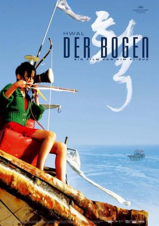

#8568 Hwal - Der Bogen
Alternativ: The Bow (Englischer Titel)
 
 IMDB-Wertung: 7.2 / 10
IMDB-Wertung: 7.2 / 10  Metascore: 0
Metascore: 0 
Kim Ki-Duk verzaubert abermals durch seine kontemplativen Bilder in einem Drama um das Zusammenleben eines alten Fischers mit einem jungen Mädchen, das durch die Ankunft eines jungen Mannes ins Schwanken gerät.
Jahr: 2005
Dauer: 84 Minuten
FSK: 12
Land: Süd-Korea Studio: UFATonspuren:
Untertitel:
Auflösung: 720p (1280x720) Größe: 2334 MB
Genre: Drama, Liebe
Regisseur: Ki-duk Kim
Drehbuch: Ki-duk Kim
Soundtrack: Eun-il Kang
Darsteller:
- Gook-hwan Jeon als The student's father
- Yeo-reum Han als The young girl
- Si-jeok Seo als The student
- Seok-hyeon Jo als Third Man
Datei: X:\HD-Eastern-Modern(A-M)\Hwal - Der Bogen (2005, FSK12, 1280x720).mkv seit 22.03.2018
Festplatte: HD Eastern+Western
 Es gibt insgesamt 104 Filme in der Gruppe 'HD-Eastern-Modern(A-M)'
Es gibt insgesamt 104 Filme in der Gruppe 'HD-Eastern-Modern(A-M)'